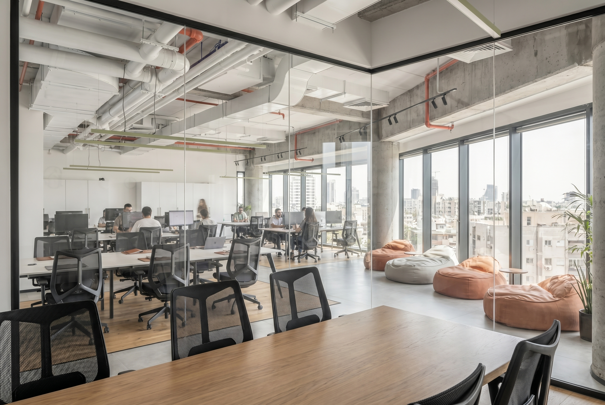
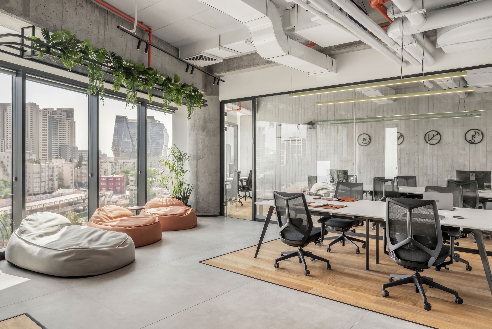
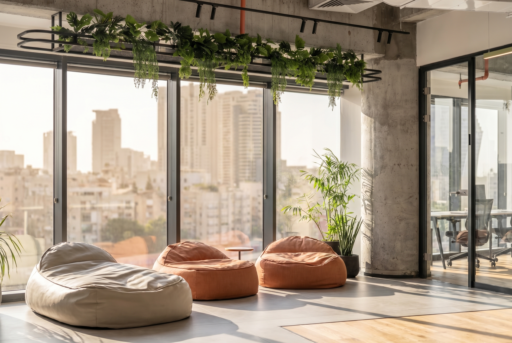
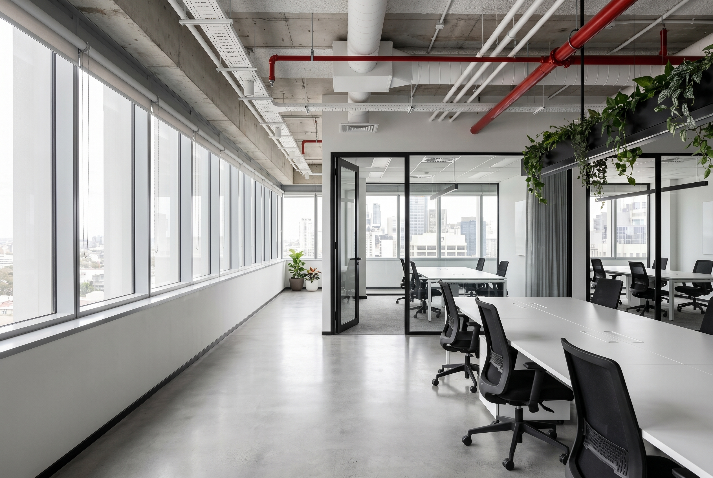

Branding Aurora
Identidade visual para unha startup tecnolóxica.

Creamos experiencias dixitais con estética escandinava e tecnoloxía de vangarda.
Ver portfolioUnha selección dos nosos proxectos máis recentes.
Un repaso visual aos traballos máis relevantes do estudo.

Identidade visual para unha startup tecnolóxica.

Sitio web minimalista para empresa de enerxía.

Aplicación de benestar con interface limpa.
Contáctanos para converter a túa idea nun produto dixital memorable.
Escribir correo